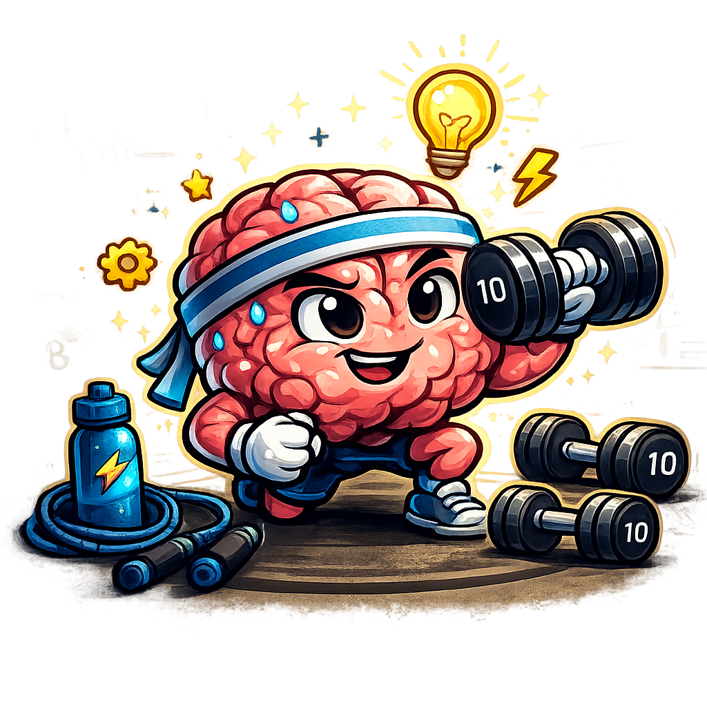

Plataforma Web de Videojuegos Cognitivos Adaptativos
Este Trabajo de Fin de Grado consiste en el diseño e implementación de una plataforma web interactiva desarrollada con tecnologías web (HTML, CSS y JavaScript) e integración de videojuegos en Unity WebGL, orientada a la estimulación cognitiva en adultos.
Autor del proyecto

Sobre el proyecto
Titulo del TFG: Desarrollo de una plataforma web interactiva para fomentar la estimulación mental en
El objetivo principal del proyecto es analizar cómo los videojuegos pueden utilizarse como herramienta de estimulación cognitiva, evaluando métricas como tiempo de reacción, precisión y progresión de dificultad adaptativa.
La plataforma registra datos de interacción del usuario con el fin de permitir un análisis posterior del rendimiento y evolución en diferentes dominios cognitivos.
adultos
Objetivo
Crear una plataforma de minijuegos cognitivos para entrenar memoria, atención y reflejos.
GitHub del proyectoArquitectura Técnica
- Frontend: HTML5, CSS3 y JavaScript.
- Motor de videojuegos: Unity (WebGL).
- Persistencia de datos: Almacenamiento local mediante LocalStorage (fase actual).
- Modelo de datos: Estructura JSON para el perfil del usuario y estadísticas de juego.
Dominios Cognitivos Evaluados
La plataforma estructura las habilidades cognitivas en diferentes dominios basados en funciones ejecutivas y modelos de psicología cognitiva.
Atención
- Atención Sostenida
- Atención Selectiva
- Atención Dividida
Memoria
- Memoria de trabajo
- Memoria espacial
Funciones Ejecutivas
- Control inhibitorio
- Flexibilidad cognitiva
- Planificación
Procesamiento
- Velocidad cognitiva
- Coordinación visomotora
Aplicación y futuro desarrollo
La plataforma está diseñada como base para futuros estudios experimentales donde se pueda analizar la evolución cognitiva del usuario mediante recopilación estructurada de datos.